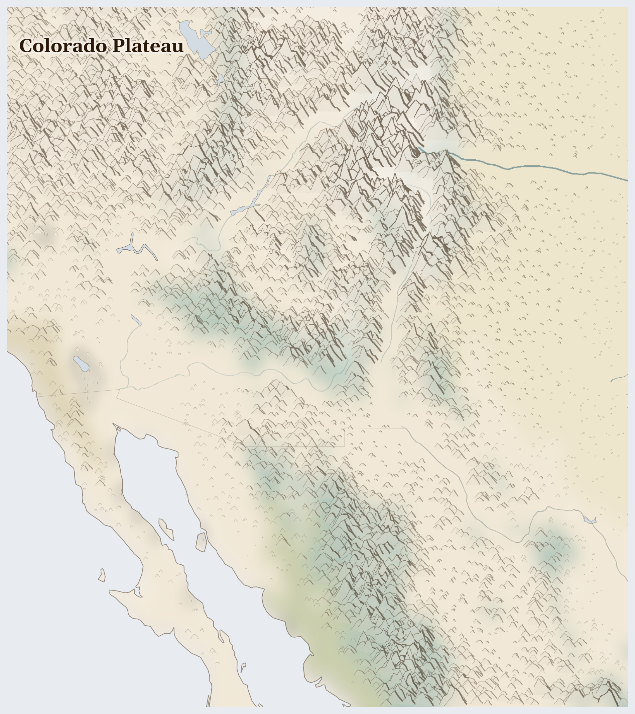

Colorado Plateau26M people
ecology last verified 4 months ago
The Colorado River used to reach the sea. For thousands of years it carved the Grand Canyon, fed the Sonoran wetlands, and emptied into the Gulf of California where Cucapá fishermen netted corvina in the brackish shallows. It does not reach the sea anymore.
Lives Lived Here
Before dawn in the Imperial Valley — one of the hottest inhabited places in the Western Hemisphere — a farmworker from Oaxaca begins cutting lettuce by headlamp. He earns $14 an hour. The lettuce will be in a Los Angeles restaurant by tomorrow evening, marked up tenfold, dressed and served to someone who has never considered that winter salad requires desert water and migrant hands. The water that irrigates the lettuce comes through the All-American Canal, which carries Colorado River water 80 miles through the desert in an unlined channel — until 2010 it leaked enough to sustain wetlands in Mexico where ejido farmers grew crops on the seepage. The canal was lined. The wetlands dried. The farmers left.
In Phoenix, a construction worker finishes a shift on a rooftop in June. The temperature hit 46 degrees today. He drinks water from a cooler provided by his employer — legally required since 2023, after a summer when Maricopa County recorded 645 heat deaths. He is documented. He has insurance. Many on the same site do not, and they do not report symptoms because a hospital visit means questions. The concrete he pours will become a data centre for a company whose sustainability report discusses water efficiency but not the 5 billion gallons per year that Arizona data centres now consume from the same aquifer the Navajo Nation has been promised and never received.
In Tucson, a Tohono O'odham elder drives 70 miles to the border wall that divides her nation's land. Her sister lives on the other side, in Sonora. Before the wall, the drive was 20 minutes. Now her sister must travel to Nogales, present documents that the nation did not issue and does not recognise, and wait. Some months she does not come. The saguaro cactus on both sides of the wall are the same age, rooted in the same aquifer, visited by the same bats that pollinate them in the same season. The wall does not know this.
In Tucson, a Tohono O'odham elder drives 70 miles to the border wall that divides her nation's land. Her sister lives on the other side, in Sonora. Before the wall, the drive was 20 minutes. Now her sister must travel to Nogales, present documents that the nation did not issue and does not recognise, and wait. Some months she does not come. The saguaro cactus on both sides of the wall are the same age, rooted in the same aquifer, visited by the same bats that pollinate them in the same season. The wall does not know this.

Reference map. Country boundaries and features are approximate.
What Presses
The weight on Colorado Plateau
Navajo Nation, Arizona — Across 27,000 square miles of high desert plateau, the largest reservation in the United States has no running water in 30% of its households. The wells that do exist draw from aquifers contaminated by decades of uranium mining — 523 abandoned mines on Navajo land, none of them fully remediated. Families drive hours on unpaved roads to fill water tanks. The Navajo hold some of the most senior water rights on the Colorado River — rights that predate Arizona statehood — but the settlement to deliver that water has been working through Congress for years while downstream cities and industrial farms consume their allocations in real time. A child on the Navajo Nation uses 7 gallons of water a day. A child in Phoenix uses 80.
Sonoran Desert Corridor, Arizona-Sonora — Between Tucson and the Mexican border, the Sonoran Desert is both one of the most biodiverse deserts on earth and one of the most lethal migration corridors. US border policy since the 1990s — "Prevention Through Deterrence" — deliberately funnelled crossings away from urban areas and into remote desert where temperatures exceed 45 degrees Celsius for weeks at a time. More than 900 sets of remains have been recovered since 2001 by the Pima County Medical Examiner; the actual number of dead is unknown. Volunteers with Humane Borders and No More Deaths leave water jugs along known routes. Border Patrol agents have been documented slashing the jugs. The people walking through this landscape are not abstractions — they are parents, tradespeople, teenagers, carrying phone numbers of relatives in Chicago and Atlanta written on scraps of paper in case they make it.
Michoacan, Mexico — In the highlands around Uruapan, avocado orchards have replaced 30,000 hectares of pine-oak forest since 2000. Purepecha indigenous communities, whose communal forests anchor the watershed, have watched their springs dry up as orchards consume the aquifer. Cartels control the avocado trade at every stage — from forcing farmers to plant, to taxing harvests, to running packing operations. A grower who resists pays in more than money. The avocados arrive at American supermarkets with a sticker that says "Mexico" and a price that reflects nothing of what was taken to grow them.
Cascade Chains
Rocky Mountain snowpack decline → Colorado River flow deficit → Lake Mead/Powell drawdown → allocation fights between 7 states, 30 tribal nations, and Mexico → Indigenous water rights paper-promised but undelivered (Navajo Nation — 30% of households without running water; Colorado River flow down 20% since 2000 [Milly and Dunne 2020])
Extreme heat intensification → outdoor worker and unhoused deaths → migrant corridor lethality → border policy funnelling crossings into deadliest terrain (Phoenix — 645 heat deaths in 2023; Sonoran corridor — 900+ remains recovered since 2001 [Pima County Medical Examiner])
Unregulated groundwater pumping → aquifer depletion → Saudi-owned export farms consuming Arizona water for overseas cattle feed → tribal and rural wells going dry → displacement to cities already straining water supply (Fondomonte LLC — no pumping limits on state trust land leases [Arizona Republic 2023])
Who Sustains This
Sinaloa Cartel · Fentanyl precursor trade (China-sourced); methamphetamine; cocaine transit; avocado extortion
Driven by: We must control the plaza — whoever controls the route controls everything
The trap: Building alternative order through destruction of social order. Cartels position themselves as providers of employment and infrastructure where the state has failed, but their violence and corruption destroy the civic fabric that would make genuine development possible. The patron who feeds the community is also the one who makes it ungovernable.
Jalisco New Generation Cartel · Methamphetamine production; fentanyl; extortion; illegal mining
Driven by: We must expand or be consumed — there is no standing still
The trap: Achieving stability through constant expansion and violence that ensures instability. CJNG's model requires perpetual territorial conquest to maintain internal cohesion, but each new front creates new enemies and new fragmentation, making the consolidation of power permanently impossible.
Three resource streams flow out of the Colorado Plateau each year — shale oil and gas from the Permian Basin, avocados from Michoacan, and migrant labour from the border corridor — and what does not return is the water consumed by fracking and orchards, the forest cleared for avocado groves, and the people who died crossing the desert. The lettuce and dates and copper leave too, but quietly, inside supply chains so long that the connection between an Arizona mine and a smartphone battery is invisible to everyone except the community whose water table dropped. 262,411 displaced (total); shale oil and natural gas, migrant labor leaving.
In Colorado Plateau, the migrant labor and shale oil and natural gas beneath the land sustain systems that profit from distance — between those who extract and those who bear the cost. But the land has survived before, and the people who tend it know rhythms older than any army. The land still provides, but the margin narrows.
For Prayer
Last updated on 2026-07-20.
For the gifts of this high desert — for red-rock canyons cut by a patient river, for the wide dry light, for peoples who have kept this land sacred since long before the surveyors came. That plenty may not become forgetfulness.
For the water and the power drawn out of this dry country to light Phoenix and Las Vegas and Los Angeles — the dammed river, the mined coal — while the river that fed a civilization no longer reaches the sea. Teach us to trace the switch and the tap back to the ground they draw from.
For the Navajo and Hopi families who live atop the uranium the country wanted and left poisoned in the ground, many still hauling water by the barrel in the richest nation on earth. For clean water promised and long withheld, and for the elders who remember what the wells were before the mines.
For those who walk north through the Sonoran desert and do not all come out of it — the ones who die of thirst within reach of a highway, the families waiting for a call that does not come. That this border country, which knows how to read the land, does not lose the habit of leaving water in it.
For eyes to see one place as both postcard and open wound; and for love that will not enjoy the canyon's beauty while forgetting the neighbours for whom this is no easy country at all.
O praise the Lord, all you nations; praise him, all you peoples. For great is his steadfast love towards us, and the faithfulness of the Lord endures for ever. Alleluia.
Lord of all power and might, the author and giver of all good things: graft in our hearts the love of your name, increase in us true religion, nourish us with all goodness, and of your great mercy keep us in the same; through Jesus Christ your Son our Lord, who is alive and reigns with you, in the unity of the Holy Spirit, one God, now and for ever.
Amen.
Seeds of Hope
The Navajo Nation fought for its Colorado River water rights for nearly a century. In 2024, the Navajo-Hopi Little Colorado River Water Rights Settlement was still working through Congress — decades of legal argument by tribal water lawyers who understood that a right without infrastructure is a promise without a pipe.
For Reflection
What would it mean to accept this contradiction—that your comfort and their suffering exist in the same global system—rather than trying to resolve it from the outside?
How might sitting with this discomfort change how you pray?
Looking Ahead
- The wet winter of 2025-26 has temporarily eased reservoir levels but has not altered the structural deficit.
- The Bureau of Reclamation's post-2026 operating guidelines for the Colorado River are under negotiation — the outcome will determine water allocation for decades and will test whether tribal nations with senior rights receive actual water or further paper promises.
- Colorado River water allocation negotiations -- the 2026 post-2026 guidelines determine how 40 million people share a river over-allocated by 20%; watch Bureau of Reclamation announcements
Carry This
What to bring with you from this briefing
Take Action
Organizations working at the nodes this briefing traces
Research organization producing definitive analyses of Colorado River water allocation, drought impacts, and agricultural water use in the American Southwest. Publishes the Water Conflict Chronology and tracks groundwater depletion across the basin.
Quantifies the Colorado River crisis the briefing traces — where over-allocation to Imperial Valley agriculture and urban sprawl consumes a river that no longer reaches the sea, and where Lake Mead and Powell storage declines threaten hydropower and drinking water for 40 million people.
Advocates for protection of the Colorado Plateau's lands, waterways, and communities. Campaigns against uranium mining near the Grand Canyon, industrial-scale groundwater pumping, and fossil fuel extraction on public lands across the arid Southwest.
Defends the Colorado Plateau landscape where the briefing's mineral and water flows intersect — where proposed uranium mines threaten groundwater feeding springs that sustain Havasupai people, and where lithium and copper extraction competes with scarce water supplies in a basin already in deficit.
Investigates environmental and health impacts of mining and oil/gas extraction, including lithium mining in Nevada (Thacker Pass), copper extraction in Arizona (Resolution Copper), and fracking in the Permian Basin. Conducts community air monitoring and documents regulatory failures.
Tracks the lithium and copper extraction the briefing documents — where Thacker Pass lithium mine threatens Paiute-Shoshone sacred sites and aquifers, and Resolution Copper would swallow Apache sacred land at Oak Flat, connecting green-transition mineral demand to Indigenous dispossession in the arid Southwest.
National organization of farmworker women advocating against workplace sexual violence, pesticide exposure, and heat-related illness in Southwest agriculture. Centers the voices of immigrant women working in desert agriculture under extreme heat conditions.
Represents the desert agriculture cost-bearers the briefing identifies — migrant farmworkers in Arizona and California's Imperial Valley who harvest crops under heat dome conditions exceeding safe labor thresholds, connecting food production in irrigated deserts to bodily harm among the most vulnerable workers.
Legal advocacy organization working on water policy, clean energy transition, and land use across the Interior West. Challenges wasteful agricultural water use, promotes municipal conservation, and advocates for equitable Colorado River allocation.
Campaigns on the water allocation conflicts the briefing traces — where 70% of Colorado River water goes to agriculture (alfalfa, cattle feed) while cities face rationing, and where groundwater pumping for data centers and semiconductor fabs adds new demand in an already over-allocated basin.
Consortium of 21 tribal nations in Arizona coordinating on water rights, healthcare, and self-governance. Advocates for tribal water settlements and challenges extraction projects that threaten reservation water sources and sacred sites.
Represents the Indigenous communities at the center of the briefing's water and mineral conflicts — where tribal nations hold senior Colorado River water rights yet lack infrastructure to use them, and where lithium and copper mining proposals threaten aquifers and sacred landscapes on and near reservation lands.
Where this comes from (9 sources)
Tier 1 = UN agencies & peer-reviewed · Tier 2 = community voice & justice orgs · Tier 3 = corporate / unverified (require 2+ independent sources)
- US Bureau of Reclamation, Colorado River Basin Water Supply and Demand Study, 2024. https://www.usbr.gov
- USGS, Central Valley Groundwater Availability Study, 2024. https://www.usgs.gov
- IOM, Missing Migrants: US-Mexico Border, 2024. https://missingmigrants.iom.int
- NASA, GRACE Groundwater Data: Southwest US, 2024. https://grace.jpl.nasa.gov
- NOAA, Western US Drought Monitor, 2024. https://droughtmonitor.unl.edu
- Milly, P.C.D. and Dunne, K.A., Colorado River flow dwindles as warming-driven loss of reflective snow energizes evaporation, Science 367(6483), 2020. https://doi.org/10.1126/science.aay9187
- Pacific Institute, Water Use and the Colorado River, 2023. https://pacinst.org
- Maricopa County Department of Public Health, Heat-Associated Deaths Report, 2024
- Udall, B. and Overpeck, J., The twenty-first century Colorado River hot drought, Water Resources Research 53, 2017
Generated 2026-07-24 · narrative prose AI-synthesized